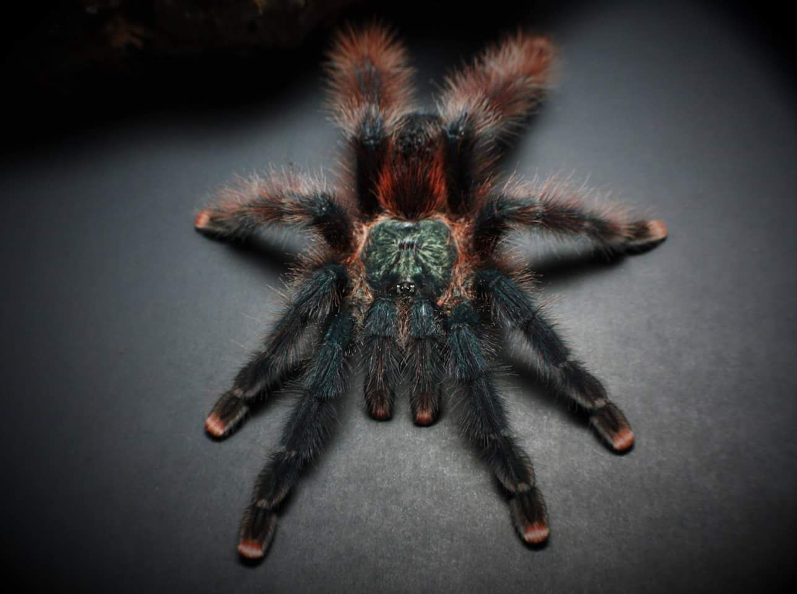
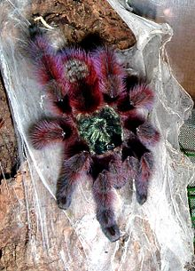
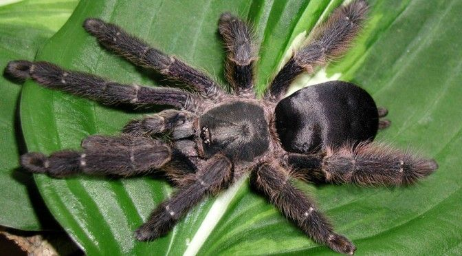
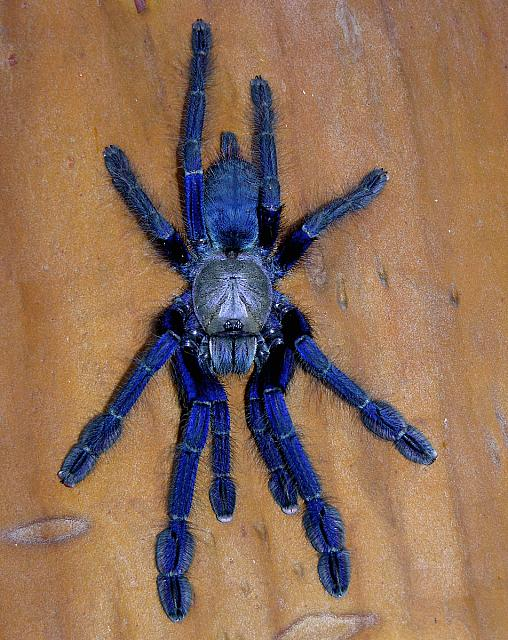

Arboreal Tarantulas
All the arboreal we have are New world tarantulas. The new world tarantulas are found in the western hemisphere including the U.S. and Mexico. New world venom is usually comparable to a bee sting, but they do have something called urticating hairs on their abdomen that they will kick when threatened. These hairs can cause itching and irritation. Usually New world tarantulas are more docile and typically slower, great if you are new to the hobby! Arboreal tarantulas are tree dwelling tarantulas, meaning that in the wild they will be found high up in the trees. Arboreal tarantulas need a taller enclosure than it is wide, about three times as tall as the length of your tarantula. In the enclosure you will want a piece of cork bark you can place upright so they can crawl on it and behind it, a water dish, a fake plant towards the top, substrate but you don’t need a lot because they like to stay in the trees, and moss if the species you have is more humidity dependent.
| Type | Avicularia Avicularia

(Pinktoe Tarantula) |
Caribena Versicolor

(Antilles Pinktoe Tarantula) |
Tapinauchenius Cupreus

(Violet Tree Spider)) |
Omothymus Violaceopes

(Singapore Blue Tarantula) |
|---|---|---|---|---|
| Male | 0 | 2 | 1 | 1 |
| Female | 1 | 0 | 3 | 2 |
| Unsexed | 2 | 0 | 2 | 4 |
| Price | $40 per tarantula | $100 per tarantula | $150 per tarantula | $200 per tarantula |